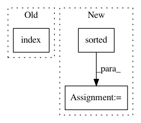

09a7f7a4deb2d05942e3ce122ddbe84205d984d6,hicexplorer/chicPlotViewpoint.py,,main,#Any#,62
Before Change
else:
data = list(interaction_data.values())
viewpoint_index = list(interaction_data.keys()).index(0)
// xticklabels = viewpointObj.createXlabels()
// log.debug("header {}".format(header))
After Change
else:
data = []
interaction_key = sorted(interaction_data)
for key in interaction_key:
data.append(interaction_data[key])
log.debug("data {}".format(interaction_key))
viewpoint_index = interaction_key.index(0)
In pattern: SUPERPATTERN
Frequency: 4
Non-data size: 3
Instances
Project Name: deeptools/HiCExplorer
Commit Name: 09a7f7a4deb2d05942e3ce122ddbe84205d984d6
Time: 2018-06-18
Author: wolffj@informatik.uni-freiburg.de
File Name: hicexplorer/chicPlotViewpoint.py
Class Name:
Method Name: main
Project Name: ilastik/ilastik
Commit Name: 2132403678d1b7985edecbad44d4d8575f8848af
Time: 2013-04-18
Author: martin.schiegg@iwr.uni-heidelberg.de
File Name: ilastik/applets/thresholdTwoLevels/opThresholdTwoLevels.py
Class Name: OpAnisotropicGaussianSmoothing
Method Name: _getInputComputeRois
Project Name: pfnet/optuna
Commit Name: ccdd6a0cb1df06715d556705255f05a94e414146
Time: 2020-10-13
Author: syameimaru_kurumi@pku.edu.cn
File Name: optuna/visualization/_contour.py
Class Name:
Method Name: _generate_contour_subplot
Project Name: stanford-mast/nn_dataflow
Commit Name: aeff109058b43a6c854621743ab7aaced5469130
Time: 2017-06-28
Author: mgao12@stanford.edu
File Name: nn_dataflow/LoopBlocking.py
Class Name:
Method Name: skip